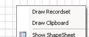
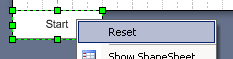
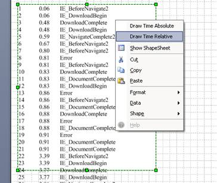

Details
You can use this template to visualize an array of measurements, for example, to examine the flow of events recorded in some process.
The template contains master shapes and macros that automatically turn the data set into a chart convenient for analysis.
Data format
Source data must be collected in a table (Excel, Access or another database) and attached to the Visio file as external data.
Data should be placed in three columns (N, T, Event) as shown in the example.

The result is a polyline showing the dependence F(n).
Digitization of coordinate axes is calculated automatically.
The template allows you to display both the entire data set and the selected interval.
The resulting image is easily scaled and transferred to another document.
System Requirements
To use this template, you must have desktop version Microsoft Visio 2007 or a later. Only Professional versions work in full. Standard Visio versions will work with limited functionality - they do not contain an External Data window, therefore they only import data through Clipboard.
Windows XP 7 and later.
Using Telemetry Template
Before creating a chart, you must create a new document based on the template and choose the method of importing data - through DataRecordset or through Clipboard. If you intend to use DataRecordset, then you must connect an external data source using standard Visio tools.
Next use the page context menu commands - Draw Recordset or Draw Clipboard.

The "Draw Recordset" command uses the first DataRecordset of the document as a source.
By default, the graph shows the entire data set. But you have the opportunity to choose a shorter interval. To limit the interval, drag the data line from the "External Data" window onto the Start shape or End shape. To cancel the constraint, right-click the "Start" or "End" shape and select "Reset".

After changing the interval, simply delete the existing chart and run the "Draw Recordset" command again.
The "Draw Clipboard" command displays a temporary shape for importing data. You need past the data as the text of this shape and execute the "Draw Absolute" or "Draw Relative" command of the shape's context menu.

Installing and checking the Telemetry Template
Download the archive and unzip the files.
The Telemetry Template (TM.vst file) does not require installation. You can put it in any folder. However, for a convenient start, the My Documents \ My Shapes folder or the folder listed in the Templates field of the File Paths dialog box is preferred.
Files TM.vsd, IE_events.xlsx and data.txt are supplied only for the purpose of verifying the functionality of the template and are not required for operation.
The TM.vsd file is an example of a working document and contains a DataRecordset obtained from the IE_events.xlsx file. Remember that after transferring files to a new location, the connection with the source file is broken, but the data copied to the DataRecordset remains available.
The data.txt file can be used to check the "Draw Clipboard" mode.
If you need to change the functionality, write comments.